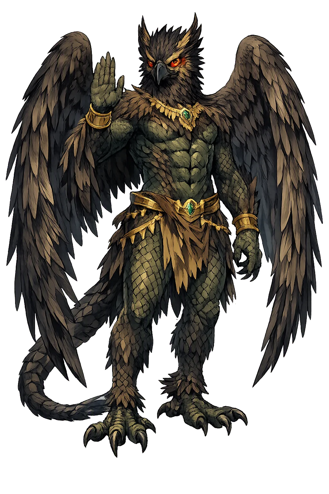
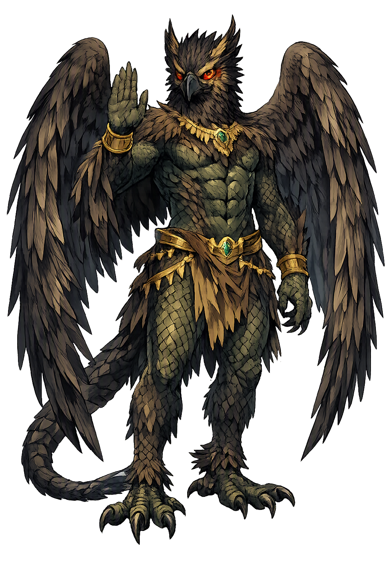

The Authentic Orthography
Wind Demon, Protection · The protective demon of the dry wind

Unicode restoration and ASCII comparison
𒀭𒉺𒍪𒍪
The name in its original Mesopotamian form. Pazuzu (𒀭𒉺𒍪𒍪) is attested in the source tradition — “Unknown”. Its original diacritics and script distinctions carry the full phonetic and orthographic weight of the source tradition.
pazuzu
The plain pazuzu form is identical to the Unicode restoration. Because this name is already written in Latin letters, no diacritics, stress, or script information were lost — only capitalization differs.
Pazuzu
The Unicode restoration does not need to recover lost marks for Pazuzu. Its value is canonical spelling and consistent cataloguing, not the reconstruction of erased orthography. The domain is readable as-is to both DNS and humanity.
Pazuzu.com → pazuzu.com
The non-ASCII characters in Pazuzu are encoded while the ASCII remains visible. To the DNS, it is Punycode. To humanity, it is Pazuzu.
How Pazuzu travels from ancient script to the modern URL
Owned, ideal, and ASCII forms of Pazuzu
Pazuzu
Restores 𒀭𒉺𒍪𒍪. The full Unicode restoration. pazuzu.com is not in the PuniCodex collection — it is watched for release; if it drops, this temple upgrades to an owned flagship.
How Pazuzu was spoken
Evil Wind · Apotropaic Guardian · Southwest Gale
Pazuzu is the best-known demon of ancient Mesopotamia: the king of the lilû wind-demons, bringer of pestilential winds from the west and southwest, and—paradoxically—the apotropaic power invoked to keep worse demons away from house, mother, and child. In Assyrian and Babylonian thought he is not merely evil; he is useful evil, a terrifying force turned against other terrifying forces.
This is a domainless flagship: the ASCII pazuzu.com is unregistrable, so the temple presents the canonical form without claiming domain ownership. The name itself—plain, compact, and phonetically direct—is the entire restoration.
King of the evil wind-demons in Akkadian and Assyrian incantations; the moving air itself made demonic.
His image was worn to ward off Lamashtu and other child-snatching demons — a frightful guardian against frightful things.
The southwest wind that carried fever, drought, and famine; meteorology and demonology were not separate sciences.
Leonic face, bulging eyes, serpents, scorpions, and eagle talons — a body designed to be more frightening than the demons it repels.
Stories of Pazuzu
Pazuzu has no long narrative epic; his 'mythology' is the archive of incantations, amulets, and bronze images that give him a precise job description. He is the demon you invoke when you need a worse demon driven off.
Assyrian and Babylonian amulets introduce Pazuzu in the first person: 'I am Pazuzu, son of Ḫanbi, king of the evil lilû-demons.' The formula identifies him as the head of a class of wind spirits and gives him a father, Ḫanbi, whose own name marks demonic ancestry. The incantations ask him to rise up and pursue malevolent forces, using his authority over the winds rather than fighting them directly.
Lamashtu was the demoness who attacked pregnant women and newborns. To stop her, families hung Pazuzu amulets and engraved plaques at doorways and bedsides. The logic is sympathetic magic at its most pragmatic: a demon powerful enough to rule the winds is powerful enough to intimidate a child-killer. Images show Pazuzu grasping snakes and scorpions while Lamashtu is bound or sent back to the underworld.
The most famous Pazuzu image is a bronze head in the Louvre (AO 19931), found in the region of ancient Assyria and dated to the 8th–7th century BCE. It combines a leonine muzzle, bulging eyes, a scaly body, a serpent penis, scorpion tail, and eagle talons. Every feature is chosen for maximum fright-value; the head was meant to be seen, not hidden, because its visibility was the protection.
In Mesopotamian meteorology, certain winds were not weather but agents of disease. The west and southwest winds could bring fever, crop-blight, and sand-storms. Pazuzu concentrates that dangerous wind into a single persona: when the air itself seems hostile, it helps to name the hostility. He is, in effect, the personification of an ecological anxiety that is still familiar in hot, dry climates today.
Pazuzu teaches that protection and peril can wear the same face. The demon who brings the pestilential wind is the same figure hung over a cradle to guard an infant. This is not contradiction; it is strategy. When the threat is invisible — a fever on the air, a sudden infant death, a miscarriage in the night — the defender must be equally uncanny.
Enter Extended Lore